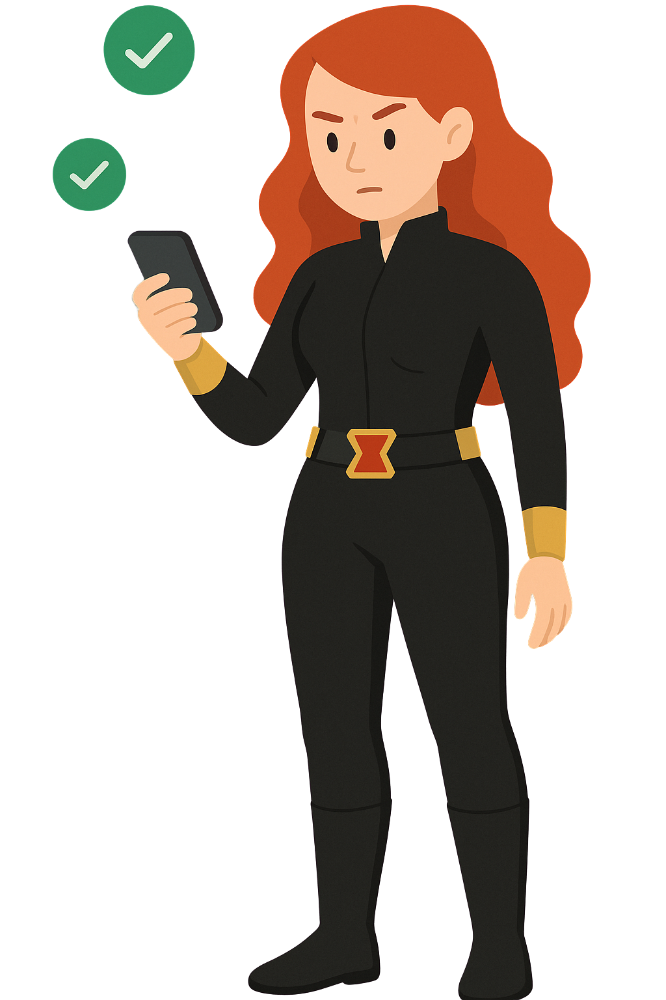

Avengers To Do
Uma aplicação web para criar, gerenciar e concluir tarefas do seu dia a dia.

Uma aplicação web para criar, gerenciar e concluir tarefas do seu dia a dia.
Este projeto foi desenvolvido por estudantes do 3º período de Ciência da Computação como parte do Projeto Integrador. Nosso objetivo foi aplicar na prática os conhecimentos adquiridos em sala de aula, utilizando HTML, CSS e JavaScript para criar uma aplicação web funcional, intuitiva e útil para o dia a dia.
Durante o processo, trabalhamos em equipe, enfrentamos desafios reais de desenvolvimento, aprimoramos nossas habilidades técnicas e aprendemos mais sobre design centrado no usuário, usabilidade e boas práticas de programação.
Mais do que entregar um projeto acadêmico, buscamos desenvolver algo que pudesse realmente ajudar na organização pessoal e estimular o uso da tecnologia como aliada da produtividade.
Organizar tarefas pode parecer simples, mas nem sempre é fácil manter tudo sob controle. Por isso, desenvolvemos esta aplicação como parte do nosso Projeto Integrador, unindo prática e propósito.
Mais do que exercitar os conhecimentos técnicos em programação, nosso objetivo foi criar uma solução real, acessível e funcional — algo que realmente ajude no dia a dia, seja para acompanhar estudos, compromissos pessoais ou atividades do trabalho.
Descubra tudo o que você pode fazer para manter sua rotina organizada e sem pendências.
Crie novas tarefas com título e descrição para manter sua rotina sob controle.
Atualize tarefas já criadas sempre que algo mudar.
Destaque tarefas finalizadas e acompanhe seu progresso.
Remova tarefas que não são mais necessárias com facilidade.
Classifique tarefas por categorias como trabalho, estudos ou pessoal.
Defina níveis de importância: alta, média ou baixa para cada tarefa.
Pesquise tarefas por palavras-chave e encontre tudo facilmente.
Escolha entre diferentes estilos de interface para usar como preferir.
Em poucos passos, você transforma tarefas soltas em uma rotina organizada e produtiva. Descubra como é simples começar a organizar sua rotina com o Avengers To Do.
Adicione um título, uma descrição opcional e clique em “Adicionar”. Simples assim.
Classifique suas tarefas por área e defina se são de alta, média ou baixa prioridade.
Acompanhe o progresso da sua rotina marcando as tarefas como finalizadas.
Edite ou exclua tarefas conforme sua rotina muda. Fácil de adaptar ao seu dia.
Tire suas dúvidas sobre o funcionamento do Avengers To Do.
Não. A aplicação pode ser usada diretamente no navegador, sem necessidade de login ou conta.
Sim. Os dados são armazenados localmente no seu dispositivo. Em versões futuras, pretendemos implementar sincronização em nuvem.
Com certeza! O Avengers To Do é totalmente responsivo e funciona bem em dispositivos móveis.
Sim! Você pode escolher entre diferentes temas visuais, incluindo modo claro e escuro.
Estamos continuamente aprimorando o sistema. Em breve, pretendemos incluir lembretes e notificações.